上海综合交通模型体系框架与功能 ( 2015年11月27日 )
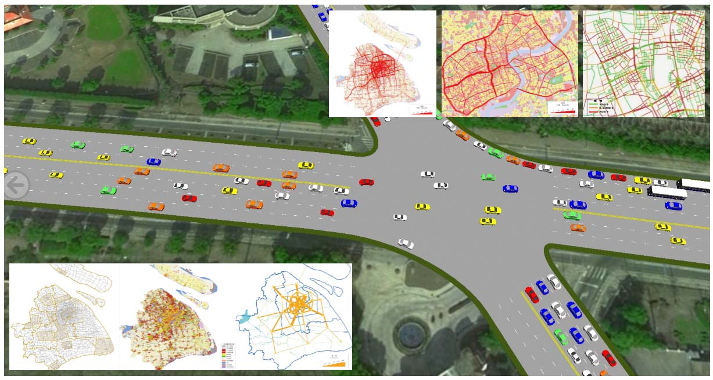
主要研究人员：陆锡明、陈必壮、董志国、蒋晗芬、沈云樟、王媛、陈欢、王磊、吴钰、程杰、江文平等</P>
摘要：</B>
上海交通模型创建于上世纪八十年代初，一直保持持续更新和定期改进。现已建成上海综合交通模型体系，为交通规划、建设和运行管理等决策研究提供定量分析技术支持，2014年在全永燊、陆锡明、马林等知名专家组成的专家组评审中，被认为总体技术达到国际先进水平。</P>
1. 上海交通模型发展历程</B>
上海交通模型创建于上世纪八十年代初。</B>1981年，为解决公交乘车难、客流过于拥挤的交通问题，上海组织了全市第一次居民出行调查，建立了公交规划模型，研究对象为公交乘客，研究范围为市区200平方公里，交通小区约200个。</P>
为开展第一次综合交通规划、内环高架世行贷款项目、地铁1号线等重大交通设施前期研究，1986年上海组织了第一次综合交通调查，并在世行资助下引进美国交通模型技术，创建了<B>城区综合交通规划模型</B>，研究对象为城市居民，研究范围扩展为中心城区约600平方公里，交通小区增至500多个，交通系统包括城市公共交通和道路交通。</P>
为支持第二次综合交通规划、交通白皮书（2002年版）、轨道交通线网规划、城市干道网规划和地铁、桥隧、快速路及干道、高速公路及干线公路等大批重大交通项目规划建设研究，在1995年第二次、2004年第三次综合交通调查基础上，将城区综合交通规划模型逐步升级为<B>市域综合交通规划模型</B>，研究对象拓展到交通总人口，并新增了货运车辆出行，研究范围扩展至全市域，交通小区增至1000个。</P>
为适应小汽车快速增长、轨道交通成网等城市交通巨大变化，全面支持交通规划、建设和运行等各阶段决策管理要求，在市领导的亲自指示下，由市长基金和城维资金资助，2007年开始研制<B>上海综合交通模型体系</B>，2013年完成。利用2009年第四次综合交通调查数据和交通信息化数据，研究范围扩展至长三角区域21万平方公里，市域交通小区增至3000个，模型功能涵盖中长期预测、现状运行分析和近期预测，主要应用项目包括综合交通白皮书、综合交通体系规划、世博交通研判和保障、虹桥枢纽建设规划、道路交通排堵保畅等。</P>
三十多年来，为适应城市交通发展变化，更好地支持交通决策和管理研究，上海交通模型已经历了四次全面升级换代，在交通规划、政策、设施建设和运行管理等本市上千个交通决策咨询项目中发挥了重要作用。</P>
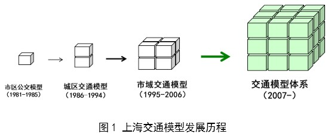
2. 上海综合交通模型体系</B>
上海综合交通模型体系总体目标：<B>以支持上海国际化大都市综合交通规划、建设和运行管理决策需要，构建“可信、实用、及时”的上海综合交通模型体系，具有现状分析、中长期预测、近期预测三大功能。</B>
模型体系总体框架：<B>包括交通规划模型包和城市交通动态运行模型包，交通规划模型包由1个大区域模型、1个市域模型和若干个地区模型组成</B>，主要应用于交通规划、政策和建设等决策研究。大区域模型主要研究长三角区域的城际交通特征。市域模型主要研究全市范围的城市交通整体特征。地区模型主要研究下辖区县、新城或热点地区的内部交通特征，近期主要研制的地区模型包括世博交通模型、虹桥商务区交通模型、松江新城交通模型等。</P>
城市交通动态运行模型包由道路交通动态运行模型、公共交通动态运行模型组成</B>，主要研究城市交通系统现状运行特征和近期变化趋势，用于城市交通运行管理等决策研究。道路交通动态运行模型研究范围为城市干道和干线公路系统，公共交通动态运行模型为轨道交通系统和轨道接驳公交系统。</P>
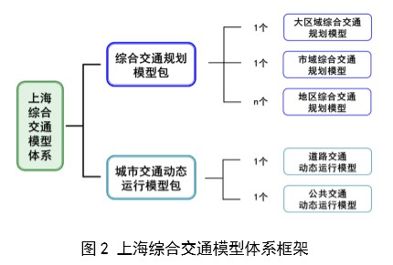
此外，模型体系还根据不同的项目要求，专门开发了专项模型，比如上海市机动车交通排放模型、城市交通短期预报模型等。</P>
3. 大区域综合交通规划模型</B>
大区域综合交通规划模型包括对外客运需求模型、大区域交通模型。</P>
大区域公路网覆盖高速公路、国道、省道三级，长度1.57万公里，包含近900个Link和近600个Node。江浙两省划分成69个交通小区，外加上海至江浙两省的23个对外道口，共计92个交通小区。</P>
大区域模型主要用于分析、预测对外客运枢纽到发客流量、市域内集散方式结构和空间分布等；分析、预测市境公路道口进出机动车流量、车种结构和市域内空间分布等；分析、预测上海与长三角区域城市之间的交通出行量及铁路、公路等交通通道的流量。适用于现状及规划年对外枢纽客流、市境道口车流分布，以及上海至长三角区域城市之间的交通出行需求等。</P>
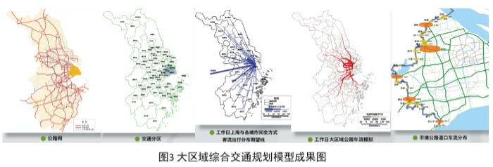
4. 市域综合交通规划模型</B>
市域综合交通规划模型（以下简称市域模型）是模型体系的核心模型，由交通出行需求、公共交通系统、道路交通系统等3个系统模型和13个子模型组成。市域模型主要功能是为全市性的交通规划、交通政策和重大设施建设等决策研究提供交通需求分析预测和方案定量评价。</P>
市<B>域模型将全市划分为约3000个交通小区</B>。模型网络覆盖轨道交通、公交和道路系统全部现状网络和建设计划网络。其中，道路网总长度超过</B>1.7万公里</B>，由7.0万个路段和2.5万个节点构成。<B>公交线网约</B>1300条、2.6万个站点，线路总长度达到2.4万公里。</P>
市域模型由交通出行需求模型、公共交通系统模型和道路交通系统模型等构成。</P>
交通出行需求模型采用trip-base理论和四步骤技术，可按照户籍类型、家庭小汽车拥有状况、年龄、就业情况等分类分析各类人群的不同目的、时段的交通出行特征，包括了私人小客车总量及分布模型、人员出行需求模型、轨道出行方式链模型、货车出行需求模型、用地与交通需求关系模型5个子模型。</P>
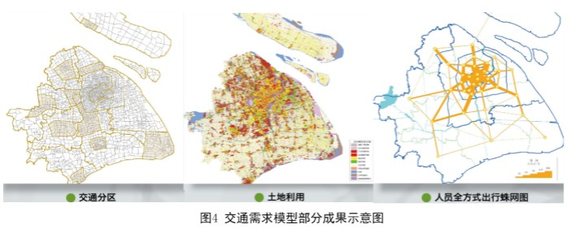
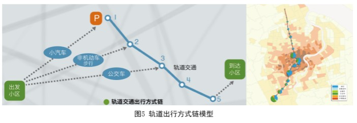
公共交通系统模型用于研究轨道交通及公交线网客流特征，轨道断面现状客流模拟精度达到85%以上，大运量公交线路现状客流模拟精度达到80%以上。公共交通系统模型包括公交线网客流分配模型、轨道高峰客流拥挤分配模型、公交线网客流预报模型3个模型。</P>
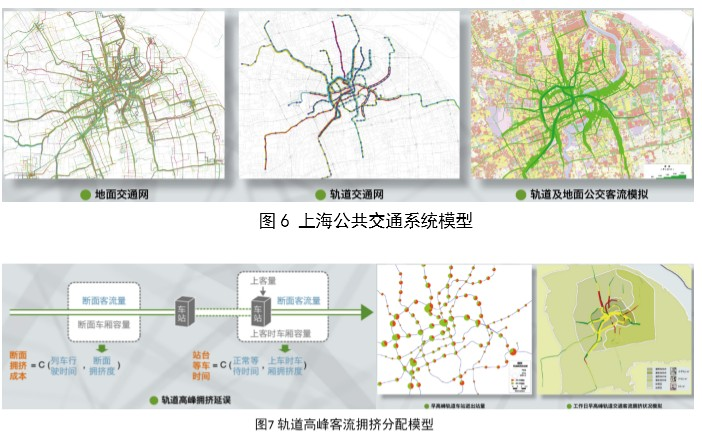
道路交通系统模型用于研究城市道路（公路）网机动车流特征，校核线及主要路段的现状车流模拟精度达到85%以上。</P>
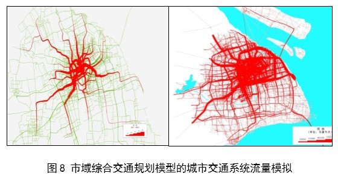
5. 道路交通动态运行模型</B>
道路交通动态运行模型的主要功能是为道路交通运行管理提供道路交通运行动态模拟、交通拥堵成因分析和管理方案评价。目前<B>研究范围覆盖快速路及高速公路网，主线总长约</B>1000公里。</P>
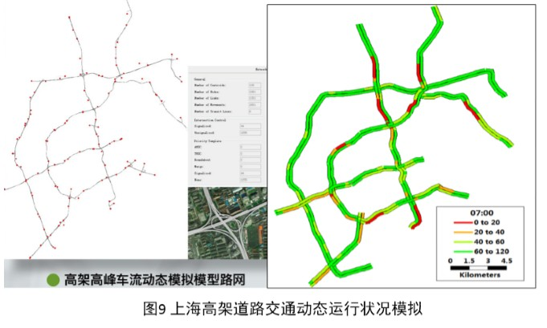
该模型利用导航电子地图和航拍影像，运行模型建立与真实情况完全一致的高仿真路网，利用车牌识别、线圈等信息数据，运行模型建立了车辆动态行驶模型，能够对车辆在快速路上的行驶轨迹进行动态模拟，车流模拟精度达到85%以上。</P>
6. 专项模型
6.1 机动车交通排放模型</B>
上海市城乡建设和交通发展研究院上海城市综合交通规划研究所与上海市环境监测中心开展了合作研究，共同开发机动车交通排放模型，促进测算数据的整合,实现了测算技术的精细化和一体化。机动车交通排放模型重点研究机动车排放物与道路交通状况与环境之间的关系，支撑交通政策的环境影响评价。</P>
机动车交通排放模型建立排放量与车辆技术特征、车辆运行工况、油品质量、环境状况及车辆作业量等各类影响因素之间的关系。排放模型采用了国际通用的IVE模型的算法，属于中观排放模型。IVE模型的计算原理即根据各类车辆技术的基础排放因子乘影响车辆排放的各项校正参数，本模型建立在大量的本地化参数基础上。</P>
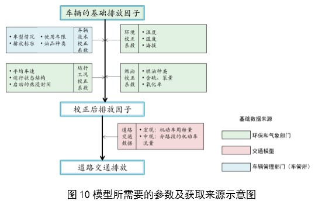
该模型可实现以下基本功能：（1）进行交通排放的测算，得到道路交通污染物的排放量和碳排放量，并可以获得细化数据，如分车种、分区域、分道路、分污染物排放量情况；（2）模拟交通总量控制类、道路运行调控类、车辆技术管理类等政策对交通排放的影响，进而可以对机动车交通政策开展环境影响评价。</P>
6.2 城市交通短期预报模型</B>
城市交通模型在世博短期预报模型的基础上，进一步优化改进宏观客流、车流预测方法，深入研究轨道网络、快速路网运行状况的趋势预测方法，建立完善的城市交通短期预测模型，为交通研判和模型信息平台提供支持。</P>
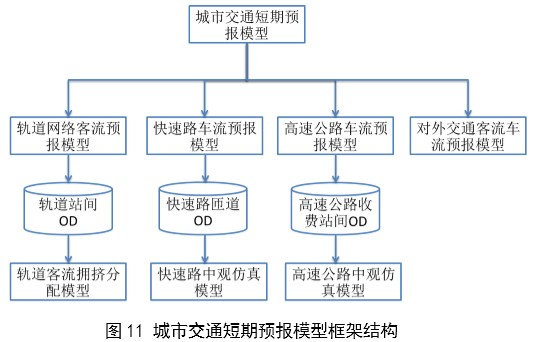
其中轨道交通短期预报模型在研发过程中对轨道交通11号线二期开通后的客流特征进行了预报检验。2013年8月31日，轨道交通11号线二期开通运营，10月16日，花桥-安亭段开通运营。根据项目要求，模型预报期为2013年开通后的下半年工作日均客流。</P>
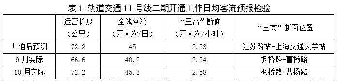
经与开通后实际客流比较，无论是客运量还是“三高”断面，预报客流均已达到宏观精度要求。</P>
快速路和高速公路系统短期预报模型采用边研发边应用的方法，在研发过程中对2013年主要节假日快速路系统车流进行预报，并进行了检验评估，经检验，快速路系统短期预报基本达到宏观精度要求。</P>
6.3 世博交通专项模型</B>
模型为世博会专门研制，以反映全日、早晚高峰宏中观层面为主，并实现了中长期预测与短期预报功能。模型将园区周边3-4公里约50平方公里区域的交通小区由67个拓展为129个。</P>
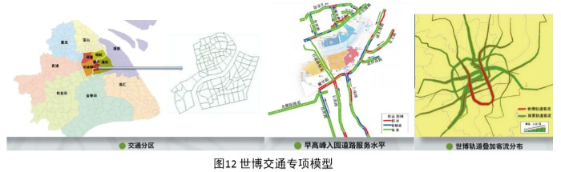
经过世博会实际工作检验，世博会游客出行特征总体符合预期。世博会期间交通短期预报的平均绝对误差在10%以内，部分误差较大的原因包括团客的突然变动、天气变化异常等。</P>
6.4 虹桥枢纽专项模型
从宏、中、微观层面反映2020年枢纽本体及商务区开发后交通需求发展态势及交通运行水平。模型将虹桥商务区86.6平方公里区域的交通小区由8个拓展为234个。</P>
模型能够预测枢纽相关交通出行需求、包括接送客需求、市内交通出行需求、本体职工出行需求；预测道路交通运行特征，包括断面车流量、行程车速、车辆车延误时间等指标；预测轨道、地面公交运行特征，包括断面客流量、轨道车站闸机排队长度、站台客流密度等指标；评价不同交通规划、建设、运营组织方案道路、轨道灯交通设施的服务水平。</P>
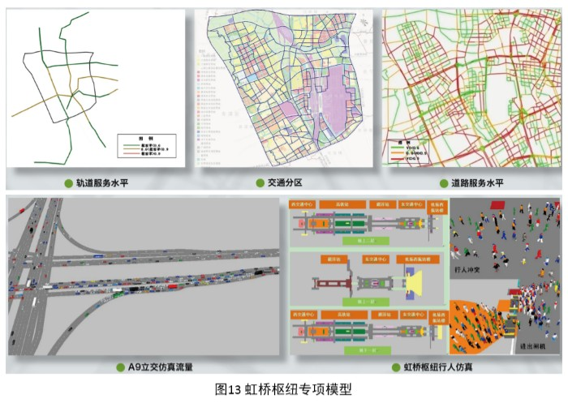
7. 总结
上海交通模型在三十多年的发展，经历了从无到有、从有到精的变化，经过模型三期的不断改进，总体技术被国内外专家认定达到了国际先进水平。如今上海交通模型仍然在不断优化和改进中：一是基于最新的第五次交通大调查数据，对既有模型参数进行更新和优化，进一步提高模型精度，使模型更符合上海实际交通状况；二是继续学习和吸收国外先进的模型构建理论和实践，逐步将现有基于Trip Base理论的模型构架向当前国际上更为先进的Activity Base理论模型过渡，进一步提升模型水平；三是结合上海城市交通发展实际情况与规划管理工作的需要，拓展模型功能，尤其加强对政策类项目的模拟和评价功能，为诸如私人小汽车牌照拍卖、中心城高架限行、机动车尾气排放等相关政策的出台提供数据预测和效果评价等方面的支持。</P>
编辑：葛王琦
上海市城乡建设和交通发展研究院
上海城市综合交通规划研究所

地址：上海市静安区铜仁路331号11楼 邮编：200040 Web:site:www.scctpi.sh.cn
电话：（021）62477711 62890464 传真：（021）62472386 62892787
 沪ICP备11003425号-4
沪ICP备11003425号-4